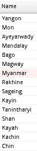
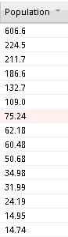
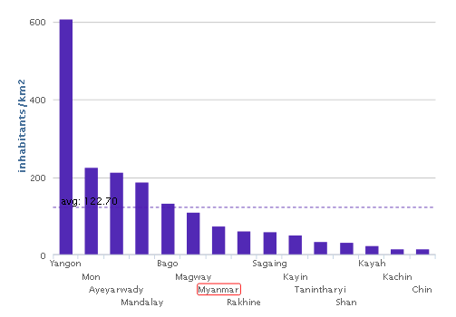

The application lets you sort analytical units based on their indicators' values in descending or ascending order mode.
This sorting functionality is provided via tables in the chart panel. By sorting values in any column of the table, the same sorting is immediately projected also into columns or pie charts, where corresponding attributes are sorted in the same way. The sorting of values in the table is activated by a single click on the column header.
 